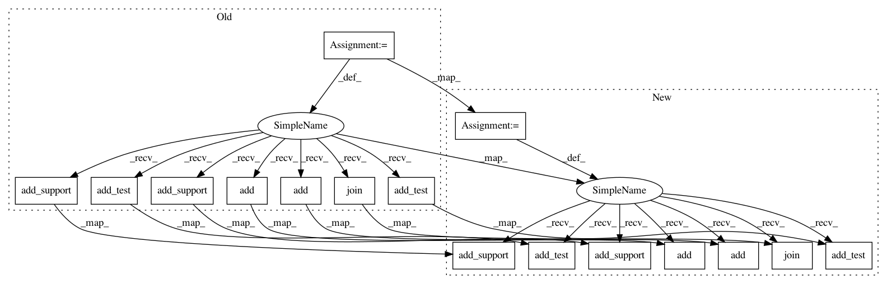

343cb214a384df7061e0e4300bc376ae4f66b5ef,deepchem/models/tests/test_overfit.py,TestOverfit,test_residual_lstm_singletask_classification_overfit,#TestOverfit#,725
Before Change
dc.metrics.accuracy_score)
with g.as_default():
support_model = dc.nn.SequentialSupportGraph(n_feat)
// Add layers
// output will be (n_atoms, 64)
support_model.add(dc.nn.GraphConv(64, activation="relu"))
// Need to add batch-norm separately to test/support due to differing
// shapes.
// output will be (n_atoms, 64)
support_model.add_test(dc.nn.BatchNormalization(epsilon=1e-5, mode=1))
// output will be (n_atoms, 64)
support_model.add_support(dc.nn.BatchNormalization(epsilon=1e-5, mode=1))
support_model.add(dc.nn.GraphPool())
support_model.add_test(dc.nn.GraphGather(test_batch_size))
support_model.add_support(dc.nn.GraphGather(support_batch_size))
// Apply a residual lstm layer
support_model.join(dc.nn.ResiLSTMEmbedding(
test_batch_size, support_batch_size, max_depth))
with self.test_session() as sess:
model = dc.models.SupportGraphClassifier(
sess, support_model, test_batch_size=test_batch_size,
After Change
classification_metric = dc.metrics.Metric(dc.metrics.accuracy_score)
support_model = dc.nn.SequentialSupportGraph(n_feat)
// Add layers
// output will be (n_atoms, 64)
support_model.add(dc.nn.GraphConv(64, n_feat, activation="relu"))
// Need to add batch-norm separately to test/support due to differing
// shapes.
// output will be (n_atoms, 64)
support_model.add_test(dc.nn.BatchNormalization(epsilon=1e-5, mode=1))
// output will be (n_atoms, 64)
support_model.add_support(dc.nn.BatchNormalization(epsilon=1e-5, mode=1))
support_model.add(dc.nn.GraphPool())
support_model.add_test(dc.nn.GraphGather(test_batch_size))
support_model.add_support(dc.nn.GraphGather(support_batch_size))
// Apply a residual lstm layer
support_model.join(
dc.nn.ResiLSTMEmbedding(test_batch_size, support_batch_size, 64,
max_depth))
model = dc.models.SupportGraphClassifier(
support_model,
test_batch_size=test_batch_size,
In pattern: SUPERPATTERN
Frequency: 4
Non-data size: 16
Instances
Project Name: deepchem/deepchem
Commit Name: 343cb214a384df7061e0e4300bc376ae4f66b5ef
Time: 2017-02-20
Author: bharath.ramsundar@gmail.com
File Name: deepchem/models/tests/test_overfit.py
Class Name: TestOverfit
Method Name: test_residual_lstm_singletask_classification_overfit
Project Name: deepchem/deepchem
Commit Name: 343cb214a384df7061e0e4300bc376ae4f66b5ef
Time: 2017-02-20
Author: bharath.ramsundar@gmail.com
File Name: deepchem/models/tests/test_overfit.py
Class Name: TestOverfit
Method Name: test_attn_lstm_singletask_classification_overfit
Project Name: deepchem/deepchem
Commit Name: 66387854c407cc5d8a6ce71d111f56fe9a4586ed
Time: 2017-01-13
Author: bharath.ramsundar@gmail.com
File Name: deepchem/models/tests/test_overfit.py
Class Name: TestOverfit
Method Name: test_attn_lstm_singletask_classification_overfit
Project Name: deepchem/deepchem
Commit Name: 66387854c407cc5d8a6ce71d111f56fe9a4586ed
Time: 2017-01-13
Author: bharath.ramsundar@gmail.com
File Name: deepchem/models/tests/test_overfit.py
Class Name: TestOverfit
Method Name: test_residual_lstm_singletask_classification_overfit